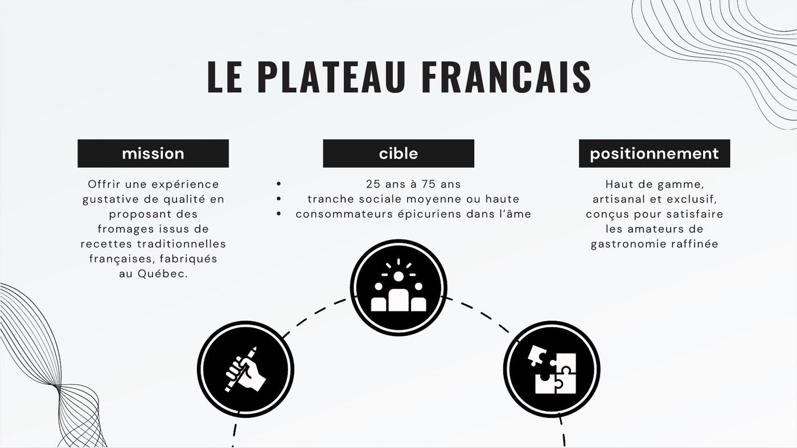
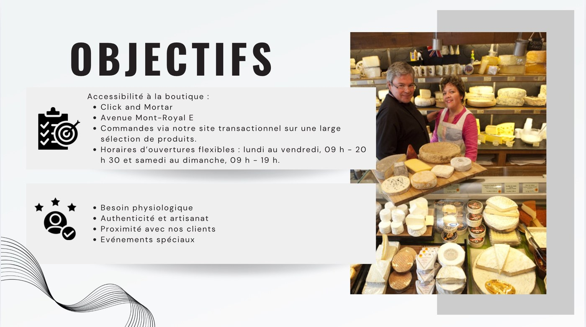
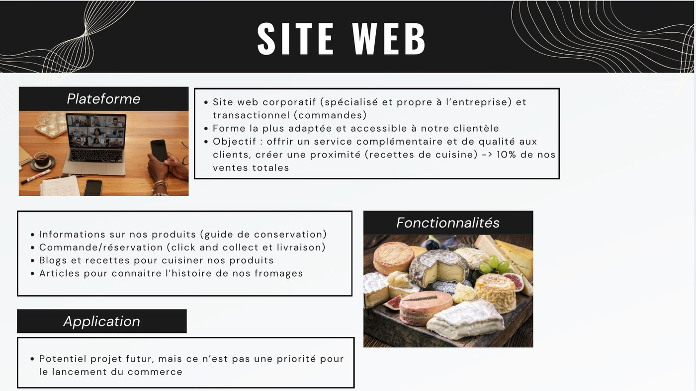
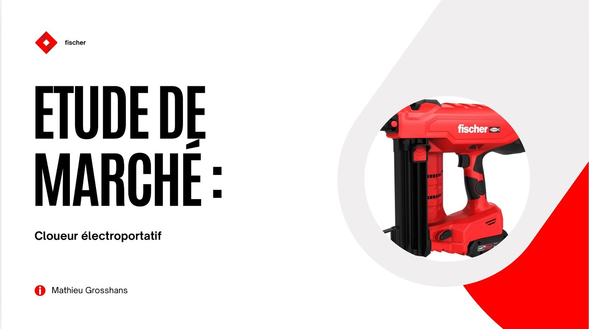
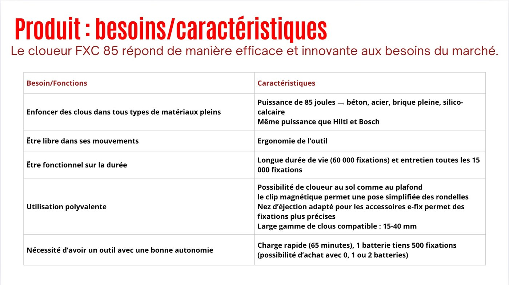
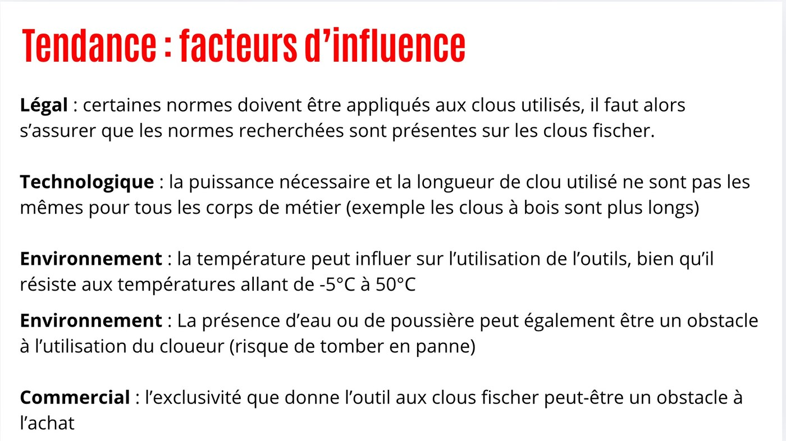

Business plan & stratégie
Construire un plan d'affaires complet : concept, modèle économique, objectifs et trajectoire de lancement.
Compétence · Les coulisses
« The only thing standing between you and your goal… » — une stratégie, et de l'audace.
Le business développement consiste à identifier les leviers de croissance d'une activité et à les transformer en actions concrètes : analyser un marché, définir un positionnement et une cible, puis bâtir une stratégie commerciale viable. C'est un travail de diagnostic autant que de vision — relier l'étude du terrain à une offre rentable et différenciante.
Compétences développées
Au générique de cette compétence — ce que ces réalisations m'ont appris
Construire un plan d'affaires complet : concept, modèle économique, objectifs et trajectoire de lancement.
Mener une recherche structurée pour comprendre un marché, ses acteurs et ses facteurs d'influence.
Définir mission, cible et positionnement, et mesurer l'importance du choix des cibles commerciales.
Ajuster l'offre pour maîtriser les coûts (local, équipement) tout en préservant la valeur perçue.
Durant mon Erasmus au Canada, dans le cadre du cours « Démarrer un commerce de détail », j'ai dû construire un business plan complet autour d'un concept de mon choix. J'ai opté pour l'ouverture d'une fromagerie dans le quartier français de Montréal — Le Plateau Français — avec un objectif clair : proposer des fromages de qualité dans une région où l'offre est rare, et séduire aussi bien les Français installés à Montréal que les Québécois.
J'ai mobilisé les compétences acquises dans ce cours, en lien direct avec mon parcours en Business Développement et Management de la Relation Client. Je me suis appuyé sur deux apprentissages clés : « réaliser un diagnostic avant la mise en place d'actions commerciales » et « mesurer l'importance du choix des cibles commerciales ». Concrètement, j'ai conduit un travail de recherche et de diagnostic du marché du fromage, puis défini la mission, la cible et le positionnement de l'enseigne, ses objectifs commerciaux ainsi que sa stratégie web (site corporatif et transactionnel).
Ce projet m'a permis d'aborder de façon concrète le volet Business Développement de mon parcours, un domaine dans lequel je partais sans expérience. Le défi principal a consisté à ajuster l'offre pour maîtriser les coûts (location du local, équipement, etc.) tout en préservant la valeur perçue. Ces compétences, directement transférables, me serviront aussi bien dans la suite de ma formation que dans mon alternance.



Lors de mon stage chez Fischer, j'ai été chargé de réaliser une étude de marché sur les cloueurs électroportatifs, en vue du lancement d'un nouveau produit : le cloueur FXC 85.
Je me suis appuyé sur les connaissances acquises dans la ressource Marketing Mix, ainsi que sur une précédente étude de marché menée dans le cadre d'une SAE. J'ai analysé les besoins du marché et les caractéristiques attendues du produit (puissance, ergonomie, durabilité, polyvalence, autonomie), puis étudié les facteurs d'influence — légaux, technologiques, environnementaux et commerciaux — susceptibles de peser sur l'adoption de l'outil.
Cette étude m'a permis de consolider mes compétences en marketing, de diversifier mes sources d'information et d'apprendre à adapter une analyse aux directives imposées comme aux contraintes du terrain — notamment en intégrant les retours clients.


